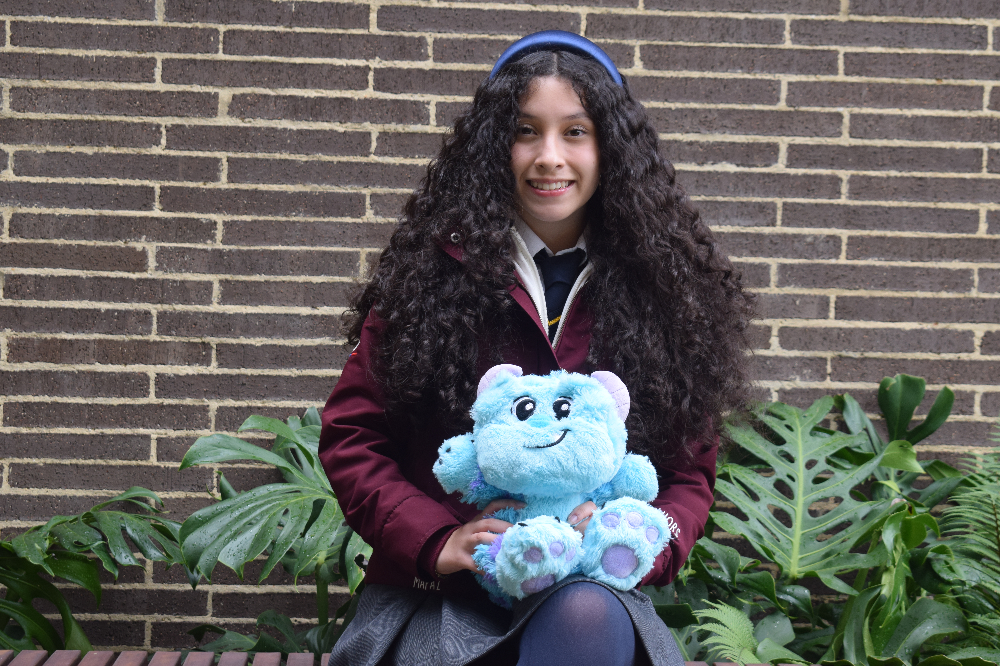
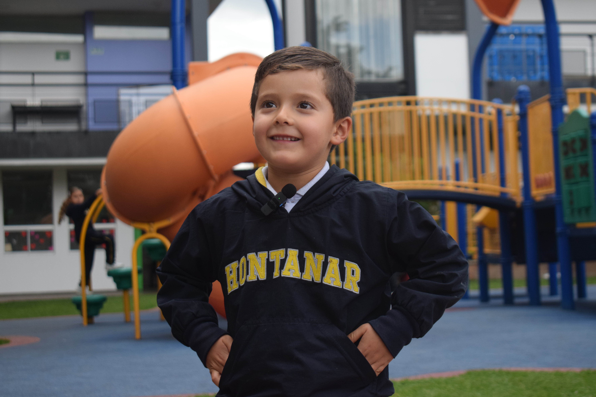
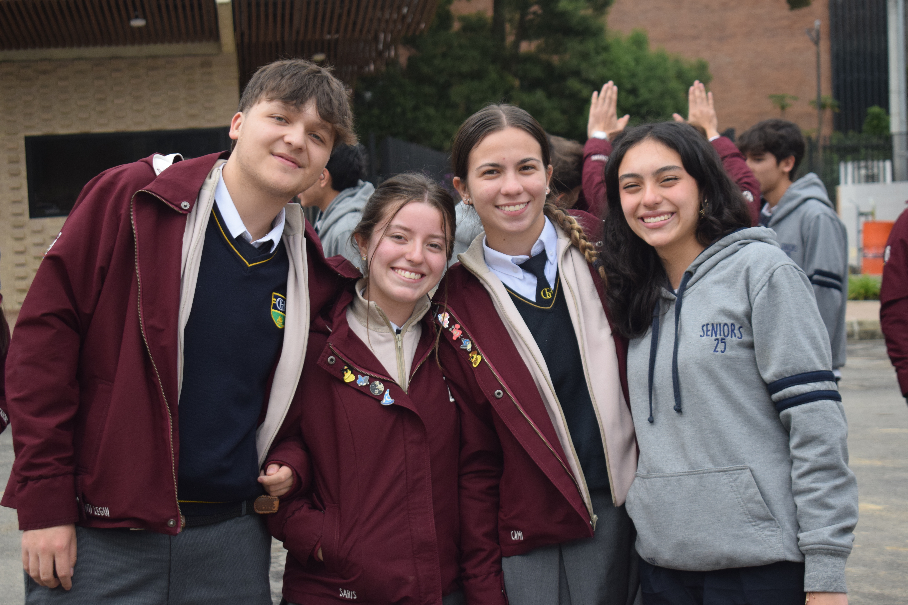
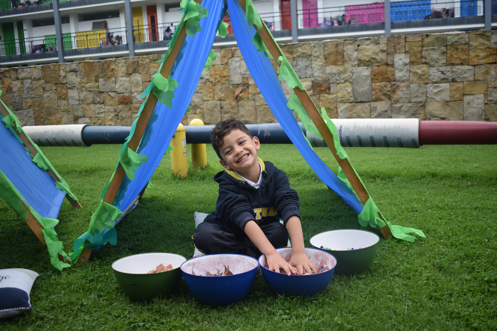
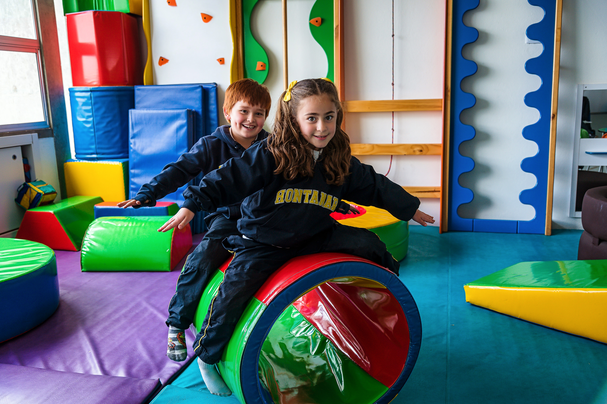

.png)
¿Buscas un colegio calendario A en Bogotá que prepare a los estudiantes para la vida real? En el Gimnasio El Hontanar se forman niños y jóvenes autónomos, responsables y con criterio, porque los valores, el carácter y el aprendizaje con sentido son parte del día a día.
Nuestro objetivo es que cada niño y joven deje el colegio con habilidades académicas, emocionales y sociales que transformen su vida y la de su comunidad.
Formación integral
En el Gimnasio El Hontanar, creemos en la formación integral y nuestra filosofía educativa se fundamenta en una acción pedagógica donde los valores, el carácter y el aprendizaje significativo son el centro del proceso formativo.
Del Gimnasio El Hontanar
Nuestra filosofía educativa se fundamenta en una acción pedagógica donde los valores, el carácter y el aprendizaje significativo son el centro del proceso formativo.
PILARES FUNDACIONALES
Valores que inspiran
Cada pilar de nuestra filosofía moldea estudiantes íntegros, críticos y comprometidos con el mundo.
Carácter y Criterio
Formamos estudiantes con pensamiento crítico, criterio propio y fortaleza de carácter para tomar decisiones éticas en cualquier contexto.
Convivencia y Respeto
Con el Programa KiVa y la formación en valores, construimos comunidad desde relaciones positivas, el buen trato y la sana convivencia.
Excelencia Académica
Como colegio IB, combinamos metodologías activas con estándares internacionales para preparar ciudadanos globales y profesionales íntegros.
Bienestar Integral
El bienestar emocional es inseparable del aprendizaje. Acompañamos a cada estudiante con herramientas para crecer feliz, seguro y pleno.
Conciencia Ambiental
Nuestro campus campestre es escenario de aprendizaje vivo. Formamos líderes ecológicos con responsabilidad por el futuro del planeta.
Ciudadanía Global
A través del multilingüismo, el IB y los programas de intercambio, formamos estudiantes capaces de actuar con impacto en un mundo globalizado.
NUESTRA COMUNIDAD
La vida en el Hontanar






MOMENTOS QUE INSPIRAN
Educando para la vida

Cada día en el Hontanar es una oportunidad de crecer, convivir y descubrir el mundo con otros.

El respeto, la responsabilidad y la empatía son el hilo conductor de nuestra propuesta educativa.

Formamos niños y jóvenes felices, seguros de sí mismos y listos para transformar su entorno.

Nuestro campus campestre es el escenario ideal para un aprendizaje activo, significativo y feliz.
— VOCES DE NUESTRA COMUNIDAD —
"El Hontanar me enseñó que uno es más que un resultado. El colegio influyó en mis decisiones y en la manera de ponerme metas y alcanzarlas con disciplina. Esa combinación de academia y humanidad sigue siendo, para mí, su mayor fortaleza."


.png)
.jpg)